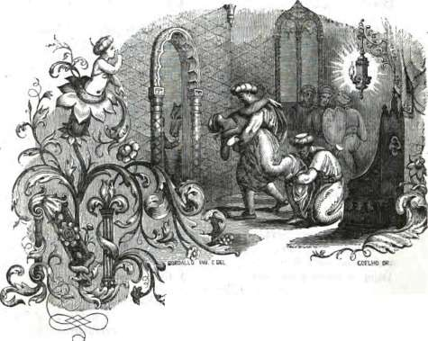
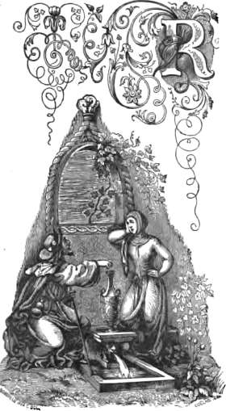
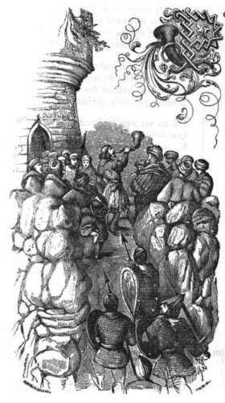
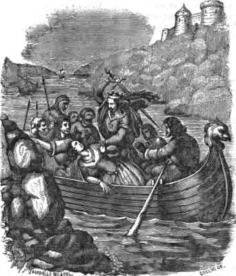

MIRAGAIA
ROMANCE POPULAR
PELO A. DE ADOZINDA, BERNAL FRANCEZ, ETC.
ILLUSTRAÇÕES DOS SRS. BORDALLO E COELHO.
LISBOA
TYP. DA SOCIEDADE PROPAGADORA DOS CONHECIMENTOS UTEIS
LARGO DO PELOURINHO N.º 24.
MDCCCXLIV.
Quando dei ésta bagatella aos Srs. Editores do jornal das bellas-artes
para encherem algum vão que lhes sobrasse n'aquella tam linda e tam
elegante publicação, escrevi, a um canto do proprio rascunho original
que não tive paciencia de copear, as seguintes palavras:
«Este romance é uma verdadeira reconstrucção de um monumento antigo.
Algumas coplas são textualmente conservadas da tradição popular, e se
cantam no meio da historia rezada, ainda hoje repetida por velhas e
barbeiros do logar. O conde D. Pedro e os chronistas velhos tambem
fabulam cada um a seu modo. O auctor, ou, mais exactamente, o
recopilador, seguiu muito pontualmente a narrativa oral do povo, e
sobretudo quiz ser fiel ao stylo, modos, e tom de cantar e contar
d'elle; sem o quê, é sua íntima persuasão que se não póde restituir a
perdida nacionalidade á nossa litteratura.»
O postscriptum, servindo de nota ou commento, sahiu impresso no primeiro
número do referido jornal com os dois primeiros cantares do romance, e
foi ampliado com algumas observações por extremo lisongeiras dos Srs.
Editores, a quem tomára eu auxiliar como elles merecem por sua gentil
imprêza, que é a mais bella e das mais uteis que se teem commettido em
Portugal.
Devo ao seu favor, não so o terem adornado a minha miragaia com as suas
graciosas gravuras em madeira que todos teem admirado, mas o permittirem
que fizesse com ellas ésta pequena edição em separado com que quero
brindar alguns amigos apaixonados, como eu, de nossas antigualhas
populares.
É uma folha avulsa do meu romanceiro geral cujo primeiro volume ja está
em podêr do público; e lá será reposta em tempo e logar conveniente.
Foi das primeiras coisas d'este genero em que trabalhei; e é a mais
antiga reminiscencia de poesia popular que me ficou da infancia, porque
eu abri os olhos á primeira luz da razão nos proprios sitios em que se
passam as principaes scenas d'este romance. Dos cinco aos dez annos de
edade vivi com meus paes n'uma pequena quinta, chamada o «Castello »,
que tinhamos áquem Doiro, e que se dizia tirar esse nome da vizinhança
das ruinas do antigo castello mourisco que alli jazem perto. Com os
olhos tapados eu iria ainda hoje achar todos esses sitios marcados pela
tradição popular. Muita vez brinquei na fonte do rei Ramiro,--cuja água
é deliciosa com effeito; e tenho idêa de me ter custado caro, outra vez,
o imitar, com uma gaita da feira de San'Miguel, os toques da bozina de
S. M. Leoneza, impoleirado eu, como elle, n'um resto de muralha velha do
castello d'elrei Alboazar: o que meu pae desapprovou com tam
significante energia, que ainda hoje me lembra tambem.
Assim ólho para ésta pobre Miragaia como para um brinco meu de criança
que me apparecesse agora; e quero-lhe--que mal ha n'isso?--quero-lhe
como a tal. Não a julguem tambem por mais, que o não vale.
Lisboa 24 de Janeiro 1844.
MIRAGAIA
I

Noite escura tam formosa,
Linda noite sem luar,
As tuas estrellas de oiro
Quem n'as poderá contar!
Como as folhinhas do bosque,
Como as areias do mar...
Em tantas lettras se escreve
O que Deus mandou guardar.
Mas guai do homem que se fia
N'essas lettras decifrar!
Que a ler no livro de Deus
Nem anjo póde atinar.
Bem ledo está Dom Ramiro
Com sua dama a folgar;
Um perro bruxo judio
Foi causa de elle a roubar:
Disse-lhe que pelos astros
Bem lhe podia affirmar
Que Zahara, a flor da belleza,
Lhe devia de tocar.
E o rei veio de cilada
D'além do Doiro passar,
E furtou a linda moira,
A irman d'Alboazar.
A Milhor, que é terra sua
E está á beira do mar,
Se acolheu com sua dama,
Nem de mais sabe cuidar.
Chora a triste da rainha,
Não se póde consolar:
Deixá-la por [~u]a moira
Deixá-la com tal dezar!
E a noite é escura cerrada,
Noite negra sem luar,
Sosinha no seu balcão
Assim se estava a queixar:
--«Rei Ramiro, rei Ramiro,
Rei de muito mau pezar,
Em que te errei d'alma ou corpo,
Que fiz para tal penar?
«Diz que é formosa essa moira,
Que te soube infeitiçar...
Mas tu dizias-me d'antes
Que eu era bella sem par.
«Que é môça, na flor da vida...
Eu, se ainda bem sei contar,
Ha tres que tinha vinte annos,
Fi-los depois de casar.
«Diz que tem os olhos pretos.
D'estes que sabem mandar...
Os meus são azues, coitados!
Não sabem senão chorar.
«Zahara, que é flor, lhe chamam
A mim, Gaia... Que acertar!
Eu fiquei sem alegria,
A flor quem lh'a hade voltar?
«Oh! quem podéra ser homem,
Vestir armas, cavalgar,
Que eu me fôra ja direita
A esse moiro Alboazar...»
Palavras não eram dittas,
Os olhos foi a abaixar,
Muitos vultos acercados
Ao palacio viu estar.
--«Peronella, Peronella,
Criada do meu mandar,
Que vultos serão aquelles
Que por alli vejo andar?»
Peronella não responde:
Que havia de ella fallar?
Riccas peitas de oiro e joias
A tinham feito callar.
A rainha que se erguia
Por sua gente a bradar,
Sette moiros cavalleiros
A foram logo cercar;
Soltam prégas de um turbante,
A bôcca lhe vão tapar;
Tres a tomaram nos braços...
Nem mais um ai pôde dar.
Criados da sua casa,
Nenhum veio a seu chamar;
Ou peitados ou captivos
Não n'a podem resgatar.
São sette os moiros que entraram,
Sette os estão a aguardar;
Não fallam nem uns nem outros...
E prestes, a cavalgar!
So um, que de arção a toma,
Parece aos outros mandar...
Junctos junctos, certos certos,
Galopa a bom galopar!
Toda a noite, toda a noite
Vão correndo sem cessar;
Pelos montes trote largo,
Por valles a desfilar.
Nos ribeiros--peito n'agua,
Chape, chape, a vadear!
Nas defesas dos vallados
Up! salto--e a galgar!
Vai o dia alvorecendo,
Estão á beira do mar.
Que rio é este tam fundo
Que n'elle vem desaguar?
A bôcca ja tinha livre,
Mas não acerta a fallar
A pasmada da rainha...
Cuida ainda de sonhar!
--«Rio Doiro, rio Doiro,
Rio de mau navegar,
Dize-me, essas tuas aguas
Aonde as foste buscar?
«Dir-te-hei a perola fina
Aonde eu a fui roubar.
Ribeiros correm ao rio,
O rio corre a la mar,
«Quem me roubou minha joia,
Sua joia lhe fui roubar.»
O moiro que assim cantava,
Gaia que o estava a mirar...
Quanto o mais mirares, Gaia,
Mais formoso o hasde achar.
--«Quantos barcos alli véem!»
--«Barcos que nos véem buscar.»
--«Que lindo castello aquelle!»
--«É o do moiro Alboazar.»
II

Rei Ramiro, rei Ramiro,
Rei de muito mau pezar,
Ruins fadas te fadaram,
Má sina te foram dar.
Do que tens não fazer conta,
O que não tens cubiçar..!
Zahara, a flor de teus cuidados,
Ja te não dá que pensar.
A rainha, que era tua,
Que não soubeste guardar,
Agora morto de zelos
Do moiro a queres cobrar.
Oh!.. que barcos são aquelles
Doiro acima a navegar?
A noite escura cerrada,
E elles mansinho a remar...
Cozeram-se com a terra,
Lá se foram incostar;
Entre os ramos dos salgueiros
Mal se podem divisar.
Um homem saltou em terra:
Onde irá n'aquelle andar?
Leva bordão e esclavina,
Nas contas vai a rezar.
Inda a névoa tolda o rio,
O sol ja vem a rasgar,
Pela incosta do castello
Vai um romeiro a cantar:
--«Sanctiago de Galliza,
Longe fica o vosso altar:
Peregrino que la chegue
Não sabe se hade voltar.»
Na incosta do castello
Uma fonte está a manar;
Donzella que está na fonte
Poz-se o romeiro a escutar»
A donzella está na fonte,
A jarra cheia a deitar:
--«Bemditto sejais, romeiro,
E o vosso doce cantar!
«Por éstas terras de moiros
É maravilha de azar,
Ouvir cantigas tão sanctas
Cantigas do meu criar.
«Sette padres as cantavam
Á roda de um bento altar;
Outros sette respondiam
No côro do salmear,
Entre véspera e completas;
E os sinos a repicar.
«Ai triste da minha vida
Que os não oiço ja tocar!
E as rezas d'estes moiros
Ao demo as quizera eu dar.»
--«Deus vos mantenha, donzella
E o vosso cortez fallar:
Por éstas terras de moiros
Quem tal soubera de achar!
«Por vossa tenção, donzella,
Uma reza heide rezar
Aqui ao-pé d'esta fonte,
Que não posso mais andar.
«Oh! que fresca está a fonte,
Oh! que sêde de matar!
Que Deus vos salve, donzella,
Se aqui me deixais sentar.»
--«Sente-se o bom do romeiro,
Assente-se a descansar.
Fresca é a fonte, doce a agua,
Tem virtude singular:
«D'outra não bebe a rainha
Que aqui m'a manda buscar
Por manhanzinha bem cedo
Antes de o sol aquentar.»
--«Doce agua deve de ser,
De virtude singular:
Dae-me vós uma vez d'ella
Que me quero consolar.»
--«Beba o peregrino, beba
Por esta fonte real,
Cântara de prata virgem,
Tem mais valor que oiro tal.»
--«Dona Gaia que diria,
Que faria Alboazar
Se visse o pobre romeiro
Beber da fonte real?..»
--«Inda era noite fechada
Meu senhor foi a caçar:
Maus javardos o detenham,.
Que é bem ruim de aturar!
«Minha senhora, coitada,
Essa não tem que fallar:
Quem ja teve fontes de oiro
Prata não sabe zelar.»
--«Pois um recado, donzella,
Agora lhe heisde levar;
Que o romeiro christão
Lhe deseja de fallar
«Da parte de um que é ja morto,
Que morreu por seu pezar,
Que á hora de sua morte
Este annel lhe quiz mandar.»
Tirou o annel do dedo,
E na jarra o foi deitar:
--«Quando ella beber da agua
No annel hade attentar.»
Fôra d'alli a donzella,
Ia morta por fallar...
--«Anda ca, ó Peronella,
Criada de mau mandar,
«Tua ama morrendo á sêde
E tu na fonte a folgar?»
--«Folgar não folguei, senhora,
Mas deixei-me adormentar,
«Que a moira vida que eu levo
Ja não n'a posso aturar.
Ai terra da minha terra,
Ai Milhor da beira-mar!
«Aquella sim que era vida,
Aquillo que era folgar!
E em sancto temor de Deus,
Não aqui n'este peccar!»
--«Cal-te, cal-te, Peronella,
Não me queiras attentar;
Que eu a viver entre moiros
Me não vim por meu gostar.
«Mas ja tenho perdoado
A quem lá me foi roubar,
Que antes escrava contente
Do que rainha a chorar.
«Forte christandade aquella,
Bom era aquelle reinar!
Viver so, desemparada,
Ver a moira em meu logar!..»
Lembrava-lhe a sua offensa,
Está-lhe o sangue a queimar...
Na agua fria da fonte
A sêde quiz apagar.
A fonte de prata virgem
Á bôcca foi a levar,
As riccas pedras do annel
No fundo viu a brilhar.
--«Jesus seja c'o a minha alma!
Feitiços me querem dar...
O fogo a arder dentro n'agua
E ella fria de nevar!»
--«Senhora, c'o esses feitiços
Me tomára eu imbruxar!
Foi um bemditto romeiro
Que á fonte fui incontrar,
«Que ahi deitou esse annel
Para próva singular
De um recado que vos trouxe
Com que muito heisde folgar.»
--«Venha ja esse romeiro,
Que lhe quero ja fallar:
Embaixador deve ser
Quem traz presente real.»
III

Por Deus vos digo, romeiro,
Que vos queirais levantar;
Minhas mãos não são reliquias,
Basta de tanto beijar!»
O romeiro não se erguia,
As mãos não lhe quer largar;
Os beijos uns sobre os outros
Que era um nunca acabar.
Ia a infadar-se a rainha,
Ouviu-o a soluçar,
E as lagrymas, quatro e quatro,
Nas mãos sentia rollar:
--«Que tem o bom do romeiro
Que lhe dá tanto pezar?
Diga-me las suas penas
Se lh'as posso alliviar.»
--«Minhas penas não são minhas,
Que aos mortos morre o penar:
Mas a vida que eu perdi
Em vós podia incontrar.
«Minhas penas não são minhas,
Senão vossas, mal pezar!
Que uma rainha christan
Feita moira vim achar...»
--«Romeiro não tomeis coita
Por quem se não quer coitar:
Do que fui ja me não lembro,
O que sou não me é dezar.
«Deus terá dó da minha alma,
Que meu não foi o peccar;
E a esse traidor Ramiro
As contas lhe hade tomar.»
--«Pois não espereis, senhora,
Por Deus que póde tardar:
Dom Ramiro aqui o tendes,
Mandae-o ja castigar.»
Em pé está Dom Ramiro,
Ja não ha que disfarçar:
Aquellas barbas tam brancas
Cahiram de um impuxar;
O bordão e a esclavina
A terra foram parar:
Não ha ver mais gentilezas
De meneio e de trajar.
Quem viu olhos como aquelles
Com que o ella está a mirar!
Quem passou ja transes d'alma
Como ella está a passar?
Um tremor que não é mêdo,
Um surriso de infiar,
Vergonha que não é pejo,
Faces que ardem sem corar...
Tudo isso tem no semblante,
Tudo lhe está a assomar
Como ondas que vão e véem
Na travessia do mar.
A vingança é o prazer do homem;
Da mulher, é seu manjar:
Assim perdoa elle e vive,
Ella não--que era acabar.
Vingar-se foi o primeiro
E o derradeiro pensar
Que, entre tantos pensamentos,
Em Gaia estão a pullar:
Logo depois a vaidade,
O gôsto de triumphar
N'um coração que foi seu,
Que seu lhe torna a voltar.
E o rei moiro estava longe
C'os seus no monte a caçar,
Ella so n'aquella tôrre...
Prudencia e dissimular!
Abre a bôcca a um surriso
Doce e triste--de matar!
Tempéra a chamma dos olhos,
Abafa-a por mais queimar.
Poz na voz aquelle incauto
Que--ou minta ou não, é fatal.
E, com o inferno no seio,
Falla o ceo no seu fallar.
Ja os amargos queixumes
Se imbrandecem no chorar,
E em sua propria justiça
Com arte finge affrouxar.
Protesta a bôcca a verdade:
«Que não hade perdoar...»
Mas a verdade dos labios
Os olhos querem negar.
De joelhos Dom Ramiro
Alli se estava a humilhar,
Supplíca, roga, promette...
Ella parece hesitar.
Senão quando uma bozina
Se ouviu ao longe tocar...
A rainha mal podia
O seu prazer disfarçar:
--«Escondei-vos, Dom Ramiro,
Que é chegado Alboazar;
Depressa, n'este aposento...
Ou ja me vereis matar.»
Mal a chave deu tres voltas,
Na manga a foi resguardar;
Mal tirou a mão da cotta,
Que o rei moiro vinha a entrar.
--«Tristes novas, minha Gaia,
Novas de muito pezar!
Primeira vez em tres annos
Que me succede este azar!..
«Toquei a minha bozina
Ás portas, antes de entrar,
E não correste ás ameias
Para me ver e saudar!
«Muito mal fizeste, amiga,
Em tam mal me costumar:
Não sei que fazes agora
Em me querer emendar...»
No coração da rainha
Batalha se estão a dar
Os mais estranhos affectos
Que nunca se hãode incontrar:
O que foi, o que é agora,
E a ambição de reinar...
O amor que tem ao moiro,
E o gôsto de se vingar...
Venceu amor e vingança:
Deviam de triumphar,
Que era em peito de mulher
Que a batalha se foi dar.
--«Novas tenho e grandes novas,
Amigo, para vos dar:
Tomae esta chave e abride,
Vereis se são de pezar.»
Com que ância elle abriu a porta,
Vista que foi incontrar!..
Palavras que alli disseram,
Não n'as saberei contar:
Que foi um bramir de ventos,
Um bater d'aguas no mar,
Um confundir ceo e terra,
Querer-se o mundo acabar...
Vereis por fim o rei moiro
Que sentença veio a dar:
--«Perdeste a honra, christão:
Vida, quero-t'a deixar.
«De uma vez que me roubaste
Muito bem me fiz pagar:
D'esta basta-me a vergonha
Para de ti me vingar.»
Sentia-se elrei Ramiro
Do despeito devorar;
Com ar contricto e affligido
Assim lhe foi a fallar:
--«Grandes foram meus peccados,
Poderoso Alboazar;
E taes que a mercê da vida
De ti não posso acceitar:
«Eu não vim a teu castello
Senão so por me intregar,
Para receber a morte
Que tu me quizeres dar:
«Que assim me foi ordenado
Para minha alma salvar
Por um sancto confessor
A quem me fui confessar.
«E mais me disse e mandou,
E assim t'o quero rogar,
Que, pois foi pública a offensa,
Público seja o penar:
«Que ahi n'essa praça d'armas
Tua gente faças junctar,
Ahi deante de todos
A vida quero acabar
«Tangendo n'ésta bozina
Tangendo até rebentar;
Que digam os que isto virem,
E lhes fique de alembrar:
«Grande foi o seu peccado,
«No mundo andou a soar;
«Mas a sua penitencia
«Mais alto som veio a dar.»
Quizera-lhe o bom do moiro
Por fôrça alli perdoar:
Mas se a pêrra da rainha
Jurou de á morte o levar!...
Veis na praça do castello,
Toda moirama a ajunctar;
Em pé no meio da turba
Ramiro se foi alçar.
Tange que lhe tangerás,
Toca rijo a bom tocar;
Por muitas leguas á roda
Reboava o bozinar.
Se o ouvirão nas galés
Que deixou a beira-mar?
De-certo ouviram, que um grito
Tremendo se ouve soar...
IV

«Sanctiago!.. Cerra, cerra!
Sanctiago, e a matar!»
Abertas estão as portas
Da torre de par em par;
Nem atalaias nos muros
Nem roldas para as velar.
Os moiros despercebidos
Sentem-se logo apertar
De um tropel de leonezes
Ja portas a dentro a entrar.
Deixa a bozina Ramiro,
Mão á espada foi lançar,
E, de um só golpe, fendente,
Sem mais pôr nem mais tirar,
Parte a cabeça até os peitos
Ao rei moiro Alboazar.
Ja tudo é morto ou captivo,
Ja o castello está a queimar,
Ás galés, com seu despojo,
Se foram logo imbarcar.
--«Voga, rema! d'além Doiro
Á pressa, á pressa a passar,
Que ja oiço alli na praia
Cavallos a relinchar.
«Bandeiras são de Leão
Que lá vejo tremular:
Voga, voga, que além Doiro
É terra nossa!.. a remar!
«D'aqui é moirama cerrada
Até Coimbra e Thomar.
Voga, rema, e d'além Doiro!
D'aquem não ha que fiar.»
Á poppa vai Dom Ramiro
De sua galé real,
Leva a rainha á direita
Como quem a quer honrar:
Ella muda, os olhos baixos
Leva n'agua... sem olhar,
E como quem de outras vistas
Se quer so desaffrontar.
Ou Dom Ramiro fingia
Ou não vem n'isso a attentar:
Ja vão a meia corrente,
Sem um para o outro fallar.
Ainda arde, inda fumega
O alcaçar de Alboazar:
Gaia alevantou os olhos,
Triste se poz a mirar;
As lagrymas, uma e uma,
Lhe estavam a desfiar,
Ao longo, longo das faces
Correm... sem ella as chorar.
Olhou elrei para Gaia,
Não se pôde mais callar:
Cuidava o bom do marido
Que era remorso e pezar
Do mau termo atraiçoado
Que com elle fôra usar
Quando o intregou ao moiro
Tam so para se vingar.
Com a voz internecida
Assim lhe foi a fallar:
--«Que tens, Gaia... minha Gaia?
Ora pois! não mais chorar,
«Que o feito é feito...»--«E bem feito!»
Tornou-lhe ella a soluçar,
Rompendo agora n'uns prantos
Que parecia estalar:
«E bem feito, rei Ramiro!
Valente acção! de pasmar!
Á lei de bom cavalleiro,
Para de um rei se contar!
«Á falsa fe o mataste...
Quem a vida te quiz dar!
Á traição... que d'outro modo
Não es homem para tal.
«Mataste o mais bello moiro,
Mais gentil, mais para amar
Que entre moiros e christãos
Nunca mais não terá par.
«Perguntas-me porque choro!..
Traidor rei, que heide eu chorar?
Que o não tenho nos meus braços,
Que a teu poder vim parar.
«Perguntaste-me o que miro!..
Traidor rei, que heide eu mirar?
As torres d'aquelle alcaçar
Que ainda estão a fumegar:
«Se eu fui alli tam ditosa,
Se alli soube o que era amar,
Se alli me fica alma e vida...
Traidor rei, que heide eu mirar?»
--«Pois mira, Gaia!» E, dizendo,
Da espada foi arrancar:
«Mira, Gaia, que esses olhos
Não terão mais que mirar.»
Foi-lhe a cabeça de um talho;
E com o pé, sem olhar,
Borda fóra impuxa o corpo...
O Doiro que os leve ao mar.
Do estranho caso inda agora
Memoria está a durar:
Gaia é o nome do castello
Que alli Gaia fez queimar;
E d'além Doiro, essa praia
Onde o barco ia a aproar
Quando bradou «Mira, Gaia!»
O rei que a vai degollar,
Ainda hoje está dizendo
Na tradição popular,
Que o nome tem--Miragaia
D'aquelle fatal mirar.